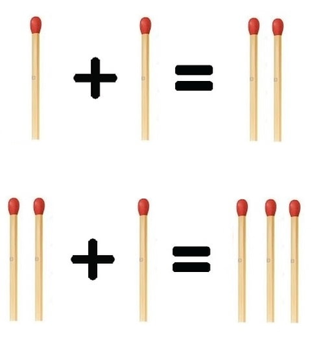

A: CME
题目：
Let’s denote correct match equation (we will denote it as CME) an equation 𝑎+𝑏=𝑐 there all integers 𝑎, 𝑏 and 𝑐 are greater than zero.
For example, equations 2+2=4 (||+||=||||) and 1+2=3 (|+||=|||) are CME but equations 1+2=4 (|+||=||||), 2+2=3 (||+||=|||), and 0+1=1 (+|=|) are not.
Now, you have 𝑛 matches. You want to assemble a CME using all your matches. Unfortunately, it is possible that you can’t assemble the CME using all matches. But you can buy some extra matches and then assemble CME!
For example, if 𝑛=2, you can buy two matches and assemble |+|=||, and if 𝑛=5 you can buy one match and assemble ||+|=|||.

Calculate the minimum number of matches which you have to buy for assembling CME.
Note, that you have to answer 𝑞 independent queries.
Input
The first line contains one integer 𝑞 (1≤𝑞≤100) — the number of queries.
The only line of each query contains one integer 𝑛 (2≤𝑛≤109) — the number of matches.
Output
For each test case print one integer in single line — the minimum number of matches which you have to buy for assembling CME.
Example
input
1 | 4 |
output1
2
3
42
1
0
1
解法：
满足火柴最小根数的式子是|+|=|| 因此当火柴根数小于4时，输出火柴根数与4的差值。当火柴根数大于4时，如果是偶数则可以组成满足条件的式子，是奇数时则需要补充一根。
代码：
1 | #include<stdio.h> |
B：Strings Equalization
题目：
You are given two strings of equal length 𝑠 and 𝑡 consisting of lowercase Latin letters. You may perform any number (possibly, zero) operations on these strings.
During each operation you choose two adjacent characters in any string and assign the value of the first character to the value of the second or vice versa.
For example, if 𝑠 is “acbc” you can get the following strings in one operation:
“aabc” (if you perform 𝑠2=𝑠1);
“ccbc” (if you perform 𝑠1=𝑠2);
“accc” (if you perform 𝑠3=𝑠2 or 𝑠3=𝑠4);
“abbc” (if you perform 𝑠2=𝑠3);
“acbb” (if you perform 𝑠4=𝑠3);
Note that you can also apply this operation to the string 𝑡.
Please determine whether it is possible to transform 𝑠 into 𝑡, applying the operation above any number of times.
Note that you have to answer 𝑞 independent queries.
Input
The first line contains one integer 𝑞 (1≤𝑞≤100) — the number of queries. Each query is represented by two consecutive lines.
The first line of each query contains the string 𝑠 (1≤|𝑠|≤100) consisting of lowercase Latin letters.
The second line of each query contains the string 𝑡 (1≤|𝑡|≤100, |𝑡|=|𝑠|) consisting of lowercase Latin letters.
Output
For each query, print “YES” if it is possible to make 𝑠 equal to 𝑡, and “NO” otherwise.
You may print every letter in any case you want (so, for example, the strings “yEs”, “yes”, “Yes”, and “YES” will all be recognized as positive answer).
Example
input
1 | 3 |
output
1 | YES |
解法:
遍历两个字符串，如果存在有相同的字母，则满足。
代码：
1 | #include<stdio.h> |
C: Save the Nature
题目
You are an environmental activist at heart but the reality is harsh and you are just a cashier in a cinema. But you can still do something!
You have 𝑛 tickets to sell. The price of the 𝑖-th ticket is 𝑝𝑖. As a teller, you have a possibility to select the order in which the tickets will be sold (i.e. a permutation of the tickets). You know that the cinema participates in two ecological restoration programs applying them to the order you chose:
The 𝑥% of the price of each the 𝑎-th sold ticket (𝑎-th, 2𝑎-th, 3𝑎-th and so on) in the order you chose is aimed for research and spreading of renewable energy sources.
The 𝑦% of the price of each the 𝑏-th sold ticket (𝑏-th, 2𝑏-th, 3𝑏-th and so on) in the order you chose is aimed for pollution abatement.
If the ticket is in both programs then the (𝑥+𝑦)% are used for environmental activities. Also, it’s known that all prices are multiples of 100, so there is no need in any rounding.
For example, if you’d like to sell tickets with prices [400,100,300,200] and the cinema pays 10% of each 2-nd sold ticket and 20% of each 3-rd sold ticket, then arranging them in order [100,200,300,400] will lead to contribution equal to 100⋅0+200⋅0.1+300⋅0.2+400⋅0.1=120. But arranging them in order [100,300,400,200] will lead to 100⋅0+300⋅0.1+400⋅0.2+200⋅0.1=130.
Nature can’t wait, so you decided to change the order of tickets in such a way, so that the total contribution to programs will reach at least 𝑘 in minimum number of sold tickets. Or say that it’s impossible to do so. In other words, find the minimum number of tickets which are needed to be sold in order to earn at least 𝑘.
Input
The first line contains a single integer 𝑞 (1≤𝑞≤100) — the number of independent queries. Each query consists of 5 lines.
The first line of each query contains a single integer 𝑛 (1≤𝑛≤2⋅105) — the number of tickets.
The second line contains 𝑛 integers 𝑝1,𝑝2,…,𝑝𝑛 (100≤𝑝𝑖≤109, 𝑝𝑖mod100=0) — the corresponding prices of tickets.
The third line contains two integers 𝑥 and 𝑎 (1≤𝑥≤100, 𝑥+𝑦≤100, 1≤𝑎≤𝑛) — the parameters of the first program.
The fourth line contains two integers 𝑦 and 𝑏 (1≤𝑦≤100, 𝑥+𝑦≤100, 1≤𝑏≤𝑛) — the parameters of the second program.
The fifth line contains single integer 𝑘 (1≤𝑘≤1014) — the required total contribution.
It’s guaranteed that the total number of tickets per test doesn’t exceed 2⋅105.
Output
Print 𝑞 integers — one per query.
For each query, print the minimum number of tickets you need to sell to make the total ecological contribution of at least 𝑘 if you can sell tickets in any order.
If the total contribution can not be achieved selling all the tickets, print −1.
Example
input
1 | 4 |
output
1 | -1 |
解法：
二分+贪心 首先将数值按从大到小顺序进行排序，二分所需要的个数，在判断时，求出a与b的最小公倍数ab，在进行分配数值时按照以下顺序进行分配（x为二分时的长度)
- 存在x/ab个最小公倍数ab的倍数，将前x/ab个数值放置在这些位置
- 判断a与b的大小，此处假设a较大，则再将n/a - n/ab个位置填满，数值数组依次填。
- 将n/b - n/ab的位置继续填满
判断经过上述分配所能得到的收益与k进行比较 返回二分结果
代码：
1 | #include<stdio.h> |
D:Sequence Sorting
题目：
You are given a sequence 𝑎1,𝑎2,…,𝑎𝑛, consisting of integers.
You can apply the following operation to this sequence: choose some integer 𝑥 and move all elements equal to 𝑥 either to the beginning, or to the end of 𝑎. Note that you have to move all these elements in one direction in one operation.
For example, if 𝑎=[2,1,3,1,1,3,2], you can get the following sequences in one operation (for convenience, denote elements equal to 𝑥 as 𝑥-elements):
[1,1,1,2,3,3,2] if you move all 1-elements to the beginning;
[2,3,3,2,1,1,1] if you move all 1-elements to the end;
[2,2,1,3,1,1,3] if you move all 2-elements to the beginning;
[1,3,1,1,3,2,2] if you move all 2-elements to the end;
[3,3,2,1,1,1,2] if you move all 3-elements to the beginning;
[2,1,1,1,2,3,3] if you move all 3-elements to the end;
You have to determine the minimum number of such operations so that the sequence 𝑎 becomes sorted in non-descending order. Non-descending order means that for all 𝑖 from 2 to 𝑛, the condition 𝑎𝑖−1≤𝑎𝑖 is satisfied.
Note that you have to answer 𝑞 independent queries.
Input
The first line contains one integer 𝑞 (1≤𝑞≤3⋅10^5) — the number of the queries. Each query is represented by two consecutive lines.
The first line of each query contains one integer 𝑛 (1≤𝑛≤3⋅10^5) — the number of elements.
The second line of each query contains 𝑛 integers 𝑎1,𝑎2,…,𝑎𝑛 (1≤𝑎𝑖≤𝑛) — the elements.
It is guaranteed that the sum of all 𝑛 does not exceed 3⋅10^5.
Output
For each query print one integer — the minimum number of operation for sorting sequence 𝑎 in non-descending order.
Example
input
1 | 3 |
output
1 | 2 |
解法：
首先将数组的值连续化，同时将相同的数字进行删减，只保留最先出现与最晚出现的，想要使得移动的次数最少，我们则需要找到最长的一个连续递增序列，递增的连续序列。此处的递增必须数字挨着递增，差值为1.
代码:
1 | #include<stdio.h> |